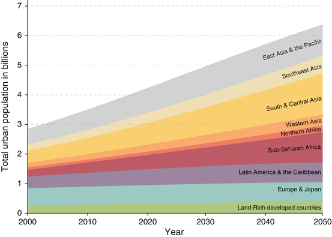
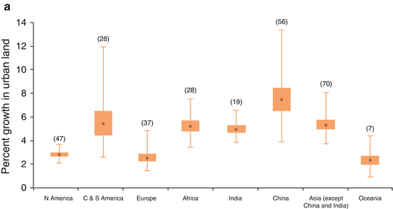
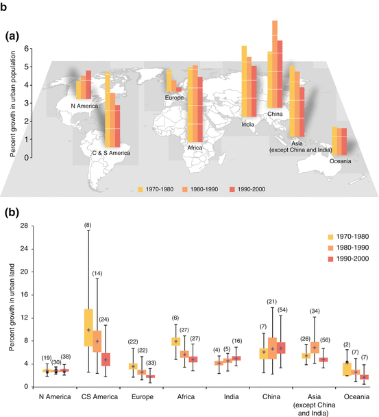
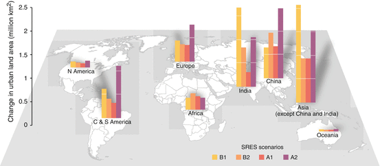
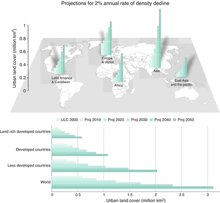
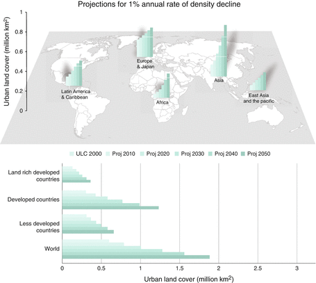
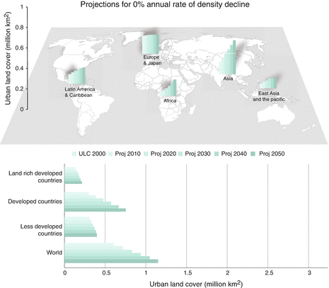
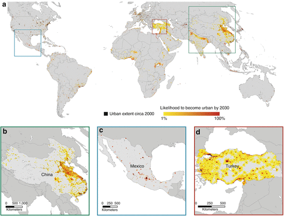

21.1 Introduction
Urbanization, being a process of simultaneous demographic, economic and biophysical change (Chap. 1), is a prime area of exploration for scholars and practitioners involved in quantitative forecasting, projecting and future scenario building. Population projections for 2100 forecast total world urban population to grow by 3–5 billion (UN 2011b). Other projections suggest that most of the urban growth is expected to take place in small and medium sized cities of one million or fewer (Montgomery 2008). What all projections show is that urbanization is occurring faster and at larger volumes in locations that are at lower stages of economic development and face rapid demographic changes (Angel et al. 2005). Future urbanization will be characterized by unprecedented magnitude and high rates of change, thus distinguishing it from past urban transitions.
Global urbanization projections are needed since cities have become dominant entities in the world’s social, economic, cultural, political, and environmental spheres. Urban areas dominate the global economy – the economies of cities currently generate more than 90 % of global Gross Value Added (UN 2011a). As global centers of production and consumption, urban areas rely on resources and ecosystem services, from construction materials to waste assimilation, that are distributed around the world. A better understanding of the urban growth process globally is important due to the significant and far-reaching socioeconomic and environmental impacts of urbanization. The impact on the environment comes at multiple scales including regional precipitation patterns (Kaufmann et al. 2007), loss of wildlife habitat and biodiversity (McKinney 2002), conversion of agricultural land (Seto et al. 2004), increase in air pollution coupled with increased automobile dependency and congestion (Boarnet and Crane 2001), and greater demand for water, energy, and agricultural resources (Johnson 2001); see also Chaps. 3, 25 and 26 in this volume. A better understanding of urban growth processes and urban morphology will allow us to better respond to global environmental change.
The size and scale of urban population growth, levels of income and the concomitant urban land-use changes pose major challenges to local and regional ecosystems, and ultimately the global environment. Two of these challenges stand out: (1) the location of urban development – whether in low-lying coastal zones, in agricultural areas, in forested regions, or near existing urban centers – affects the vulnerability of cities to climate change impacts such as sea level rise and storm surges (Chap. 25), the need to expand agricultural production into other areas, and the resources required to provide municipal services such as water, energy, and transportation infrastructure (see also Chaps. 3 and 22); (2) the way in which urban development occurs – whether expansive or compact, with multi-family or single family homes, automobile dependent or enabling multiple forms of transportation, with mixed-use or single-use zoning – affects transportation choices and travel behavior, determines infrastructure needs and energy consumption, and shapes the urban social fabric. Expansive urbanization leads to fragmented wildlife habitats and biodiversity loss, altered hydrological systems and local climates, and substantial changes in energy and nutrient cycles (see Chaps. 3 and 10).
Historically, researchers began exploring global urbanization through urban population employment and transportation models based on equilibrium and comparative statics (Batty 1976). We now have available a wide variety of models that attempt to capture aspects of the dynamic process of urban population, economic and land-use change; these models have been developed within various disciplines that adopt distinct methodological lenses (Batty 2005). Throughout the last six decades, models have reached a significant level of maturity, have exhibited successes in terms of their usefulness, and have become increasingly popular.
Land-use change models in the 1950s were concerned primarily with local areas or regions; the majority of the research conducted in this field remains a narrowly focused activity within specific urban regions. It was not until 2011 that the first global models – and the full picture – of urban land-use change emerged. The forecasts from these models complement the population and wealth projections. Modeling all dimensions of urban dynamics is now important for integrative research that is conducted on the (global) environment front – energy use, greenhouse gas emissions, heat island effects, and alterations in the natural nitrogen, carbon, and water cycles. For example, modeling land-use futures is now viewed as a fundamental activity for projecting the future health of the natural, human, and social systems locally and globally (Solecki et al. 2013).
This chapter synthesizes important parts of the recent literature on expected or projected patterns of change in urban population, wealth, and physical expansion that emerge from efforts of quantitative modeling of urbanization dynamics. Taken together, the projections provide a comprehensive view of possible global urban futures. Note that the implications of the reported global urban expansion projections for biodiversity and ecosystem services are reported in Chap. 22.
21.2 Population Projections for Urban Areas
Population projections exist at a variety of scales (spatial and temporal), involve a wide array of population characteristics (age, sex, etc.) and are utilized towards various goals (business planning, policy at various administrative levels, etc.) In this subsection we focus primarily on the urban population projections provided by the United Nations, a historical leader and currently the sole provider of global urbanization projections (UN 2012b). A more comprehensive overview of global urban population projections is provided in O’Neill et al. (2001).
The most recent United Nations World Urbanization Prospects report pinpoints that more than half of the world’s population now lives in cities compared to 30 % 50 years ago and 10 % 150 years ago (Fig. 21.1); see Chap. 3 for a historical and present examination of trends associated with urbanization and biodiversity. Between 2011 and 2050, the world population is expected to increase by 2.3 billion, growing from 7.0 billion to 9.3 billion (UN 2011b). At the same time, urban areas are expected to gain 2.6 billion people, rising from 3.6 billion in 2011 to 6.3 billion in 2050 (UN 2012b; Montgomery 2008). Importantly, most of the future world population growth up to 2030 is projected to occur in the rapidly growing cities of poor African and Asian nations (around 80 % of the total) as well as in Latin America. Africa and Asia today are urbanizing more quickly and at a larger magnitude respectively than the rest of the world’s regions (UN 2012b). While we expect increasing numbers of megacities (i.e., cities with population of over ten million people), they are expected to contain approximately the same proportion of the world’s urban population – around 15 %. The majority of future urbanites will live in rapidly growing medium-sized or small developing-world cities, subject to many present-day urban pathologies. Not only will urban areas of primarily medium size absorb the majority of future urban growth, but the majority of the new urban residents are expected to be poor (Martine et al. 2008). Poverty is increasingly becoming an urban phenomenon. While slum dwellers already constitute about 32 % of urban population in the developing regions of the world, urban growth in certain regions will come about with the formation of new slums (UN-Habitat 2012).
Much has been written about the demographic characteristics of contemporary urbanization at regional and global scales (Chap. 3). The world is currently experiencing massive demographic changes through differing rates of natural increase and net migration (Cohen 2004). These changes are crucial in terms of linking up the geopolitical realities and also prospects for rapid transitions to low carbon cities and economies in the respective contexts. In the span of the two most recent centuries, the number of cities with populations of one million or greater grew from 1 to 442 in 2010 (UN 2012b). As of 2011 there were 45 such cities in India and 88 in China. By 2025, there will be more than 600 cities of one million or more worldwide.

Fig. 21.1
Urban population projections for different world regions. Note that regional categories may be treated as cumulative, whereas the “land-rich developed countries” category should be regarded as separate (Data from Population Division of the Department of Economic and Social Affairs of the United Nations Secretariat 2011b, 2012b, accessed March 21, 2013)
Over the next two decades, the combined urban population in China and India will grow by more than 700 million (UN 2012b). China’s urban population is expected to increase by 400 million and India’s urban population will nearly double from today’s 350 million (UN 2012b). During this same period, China will create at least 30 new cities of one million; India is expected to add 26 cities of this size. The urban transitions underway in these two countries represent the largest urban transition in history. Put into a global context, by 2030, nearly one-third of the world’s urban inhabitants will live in either China or India. The impacts of the growth of urban population on natural habitats are projected to be significant in both countries (see Chap. 22).
Population projections for the World Urbanization Prospects are based fundamentally on understanding the historical trajectory ratio of urban to rural population in a particular country and extrapolating that trend into the future. The UN defines the growth of this ratio as the “urban-rural growth difference” (URGD) since it is equal to the difference between the urban and rural growth rates. Historically, URGD is higher in countries that are less urbanized and declines as the level of urbanization increases. For the creation of projections, the UN has used cross-sectional data to define a global association between URGD and the level of urbanization in a country – a global norm. Following that first step, each country is modeled for the next two decades as moving from its current URGD to the global fitted value that is derived from its current level of urbanization. All countries are modeled as following the global norm after the first two decades. The methodology is designed so that the rate of increase in the proportion of urban population in each country slows down as the country becomes more urbanized. Once a sequence of rates is established, the UN uses the projections of total population for each country to produce the projections for urban and rural populations.
Urban population projections for the world and across regions provided by the UN have also been criticized and various amendments have been proposed (Cohen 2004; Bocquier 2005; Lutz and Samir 2010). Among the several complaints, the UN has consistently projected growth rates that are too high and the forecast errors are large for the 20-year- and 10-year-ahead forecasts (Montgomery 2008). Probably, the most well-known issue with the UN historical population dataset is the lack of a consistent single definition of “urban” population across countries (UN 2012b). The UN adopts the definition of the individual country for measuring sizes of urban populations – producing a rather inconsistent mosaic across the world. This problem is compounded by issues of urban/rural dual classification, the selection of methodology, and various demographic assumptions. Many researchers suggest today that a good deal of caution with projections is indeed necessary. Box 21.1 describes some of the limitations that originate in the choices that the producers of projections have to make on methodologies, assumptions, and reduced capacity for accuracy assessments.
Box 21.1 Further Discussion of UN and Other Projections
In this box, we briefly present main themes that appear in debates over data and methodologies utilized for generating global population projections.
Historical Data: UN data lack a consistent single definition of “urban” population across countries and rely on individual country definitions of “urban” (UN 2012b). Countries like China, for example, utilize administrative boundaries across distinct scales to define urban populations. But in countries like the U.S., criteria on total population and density come strongly into play for the “urban” definition. The World Urbanization Prospects website suggests that a certain attention to corrections across time for within-country definition variation does exist. Definitions used are typically the ones that are used by national statistical offices which use them for the purposes of their latest census. Changes in definitions are dealt with in data processing and adjustment with the target of consistency: “United Nations estimates and projections are based, to the extent possible, on actual enumerations. In some cases, however, it was desirable to incorporate official or other estimates of urban population size” (UN 2012b). The UN aims for transparency in all processes that involve adjustments or alternative sources of data. In the future, other features of urbanization may appear most appealing for an integrated picture of global urban populations where “[…] characteristics such as the proportion of labor force employed in non-agricultural activities or the availability of urban facilities such as water or sewer systems may be used” (O’Neill et al. 2001).
Cohen (2004) reports that the urban-rural duality still dominates classification systems even though the structures and processes of population organization into settlements requires a radically new approach:
“While it has long been recognized that the conventional division between rural and urban is a gross oversimplification of the underlying complexity of today’s human settlement systems, in reality it is still the only one that is usually available.”
New geospatial technologies “may enable researchers to link large amounts of data of different kinds and to develop more sophisticated conceptualizations and measurements of the dimensions of settlement systems (Hugo et al. 2001).” These observations notwithstanding, the research and policy community cannot simply rely on a single binary method of human settlement pattern measurement due to a growing complexity and shifting interests and agendas of decision-makers; “other criteria, such as population density or the degree of accessibility (or remoteness) of a particular location may also have to be better defined and measured (Coombes and Raybould 2001; Hugo et al. 2001).”
Methodology: Urban projections are critically dependent on total population projections and their assumptions. The World Population Prospects 2010 Revision now suggests that the past expectation of total world population stabilization at nine billion people by 2050 could be too optimistic. Armed with a new understanding of how fertility is slowly declining in particular poor countries and slightly rising in several wealthier countries such as the U.S. and the U.K., the new projections suggest that the world population could plausibly grow to 10.1 billion by the year 2100. The question of constructing reliable population projections is still very much at the forefront of demography. Godfray et al. (2010) discussing Lutz and Samir (2010) state that, “[p]opulations in different countries are assumed to be composed of different age cohorts of the two sexes that vary in demographic rates such as mortality and fertility. Models can be extended to include differences between rural and urban populations (connected by migration) and, most importantly, educational status. There is very convincing evidence of the critical importance of female education and access to contraception in causally affecting fertility, and these are probably the chief mechanisms behind the decline in fertility as countries develop economically and go through the demographic transition. Of particular relevance here is evidence that education rates are also negatively correlated with malnutrition and food insecurity.” The handling of uncertainty depends on a wide variety of end goals of a projection/forecasting effort. Lutz and Samir (2010) list four strategies: to ignore it, to construct scenarios, to explore a plausible range of variation, and to make fully probabilistic projections; they eventually advocate for the generation of probabilistic projections:
Specific sustainability challenges require potential adjustments in use of assumptions in projections. In some cases, such as the study of future food demands, researchers recommend the use of ‘medium fertility’ scenarios (1.8 children per adult female). Note though that this number overshoots fertility rates in China; slight variations in China can have a big impact in projections overall. According to Godfray et al. (2010), “[w]ith this adjustment, global population growth is predicted to decelerate and reach just over nine billion in 2050. There are marked regional variations: Europe’s population will decline, Africa’s will double, while China will peak in about 2030 and be overtaken by India around 2020. Populations will age almost everywhere, but as the old will be healthier, rethinking age in terms of time to expected death (rather than time since birth) may give a different and more positive perspective on increased longevity.” These projections may mean little if they are disconnected with the overall regional and national economic growth patterns.
Accuracy: Accuracy, reliability and robustness of projections are naturally desirable properties of the work of demographers and typically in high demand by planers and policymakers (Cohen 2004). Unfortunately, on the ground, the realities are far from perfect. Most projections are never validated. O’Neill et al. (2001) reports on growth projections globally that are too high while assessing various projections of the UN and the World Bank since the early 1970s. Cohen (2004) also points out the past “fairly spectacular errors” that are made in publications that, in their majority, project an unchecked future urban change in developing countries and their largest urban agglomerations. In a systematic analysis of past projections, he finds a bias towards high projections, primarily due to the fact that the models employed missed the more rapid than expected drop in rates of fertility. Also,
“there has been considerable diversity in the quality of urban projections by geographic region, level of economic development, and size of country. On average, the UN urban projections have been most reliable for OECD and least reliable for countries in sub-Saharan Africa and for other high income countries, many of which are quite small. UN projections also tend to be better for larger countries than for smaller countries, probably because they receive more attention” (Cohen 2004).
A good deal of caution with projections is indeed necessary.
21.3 Economic Projections for Urban Areas
Long-range projections for economic performance have a long history in various disciplines and are expressed in terms of national economic accounts, measuring potential growth of economies and regions (Colm 1958). Global income projections have become a bread-and-butter operation for a large number of international organizations, governance bodies, think tanks, investment firms and nonprofits (TCB 2013; IMF 2013); not only are these reports produced annually but they are also updated frequently. As cities have become dominant entities in the world’s social, economic, cultural, political, and environmental spheres, the question of measurement of economic activity at the city level has become a significant research area. Recent research reveals that urban areas dominate the global economy – they produce more than 90 % of the world’s GDP (UN 2011a). It is therefore surprising that global projections for even fundamental measures of economic activity are nearly non-existent.
Academic research has shown that the level of urbanization and income per capita are highly correlated. Henderson (2010) finds that the level of urbanization explains 57 % of the variation in levels of income per capita. Additional variation can be explained by the different definitions of urbanization across countries. Others suggest that the role of urbanization is more nuanced; Bloom et al. (2008) claim that while levels of income across the globe are highly correlated with the proportion of a country’s urban population, they find no evidence that the level of urbanization affects the rate of economic growth.
The McKinsey Global Institute (MGI) recently developed urban economic projections for the world’s largest 600 metropolitan areas (MGI 2011). In a report titled “Urban World: mapping the economic power of cities,” MGI suggests that in the near future, the list of the world’s largest 600 urban economies will be substantially different since “the center of gravity of the urban world moves south and, even more decisively, east.” The projections suggest that the largest 600 urban economies will maintain their 60 % share of the total (global) GDP. One third of the developing countries that are currently on the list will not be there in 15 years. About 1 out of 20 cities in emerging economies will drop out of the top 600 list. All of the new cities entering the list of the top 600 urban economies in the near future will be developing world cities and overwhelmingly (100 new cities) from China (Fig. 21.2).
Urban areas show significantly higher levels of wealth because of higher productivity levels. However, a big challenge in urban research is the lack of measures of GDP growth at the urban scale (Fig. 21.2). It is estimated that 30 % of national GDP in the United Kingdom, Sweden, Japan, and France is accounted for by London, Stockholm, Tokyo, and Paris, respectively (Seto et al. 2010). Globally, metro areas drive their national economies, but there are significant disparities in the GDP per capita between and within the world’s urban areas (Seto et al. 2010). There is even a bigger disparity between the wealthy and the poor in cities, and this disparity is exacerbated by the scale and rapidity of change. Economic development and improvements in well-being are only part of the urbanization story: Worldwide, an estimated 863 million people currently live in informal settlements, with most living under life- and health-threatening conditions. Put another way, approximately one out of three urban dwellers worldwide lives in slum conditions, and this ratio is expected to increase in the future (UN 2012a; UN-Habitat 2012). In light of their importance locally and regionally, and considering their size globally, global urbanization projections need to explicitly incorporate approaches that consider informal settlements.
21.4 Physical Expansion Projections for Urban Areas
As emphasized in the previous section, our view of global urbanization rates and magnitude has up until now been focused solely on measures of urban population. Through two major research efforts that culminated in 2011, and another in 2012, we now better understand the global patterns of actual built-up urban land rates of growth during the last four decades. The studies also provide us with a “window into the future” through scenario and projection exercises. This section synthesizes the most recent findings discussing physical expansion futures.
21.4.1 Meta-analysis Projections
In a recent meta-analysis of 326 studies that have used remotely sensed images to map urban land conversion, Seto et al. (2011) report that between 1970 and 2000 urban areas grew by 58,000 km2 worldwide, and by 2030, cities are expected to grow by more than another 1,527,000 km2 – nearly the size of Mongolia. This growth in urban land area is equivalent to 1.3 times the size of the country of Denmark, or approximately 1.56–3.89 % of the global terrestrial area in 2000. India, China, and Africa have experienced the highest rates of urban land expansion, and the largest change in total urban extent has occurred in North America. Across all regions and for all three decades, urban land expansion rates are higher than or equal to urban population growth rates, suggesting that urban growth is becoming more expansive than compact.
Annual growth in GDP per capita drives approximately half of the observed urban land expansion in China but only moderately affects urban expansion in India and Africa, where urban land expansion is driven more by urban population growth. In high-income countries, rates of urban land expansion are slower and increasingly related to GDP growth. However, in North America, population growth contributes more to urban expansion than it does in Europe. Much of the observed variation in urban expansion was not captured by population, GDP, or other variables in the model. This suggests that contemporary urban expansion is related to a variety of factors difficult to observe comprehensively at the global level, including international capital flows, the informal economy, land-use policy, and generalized transport costs. Using the results from the global model, the authors developed forecasts for new urban land cover using the Special Report on Emission Scenarios (SRES) by the IPCC. Their projections show that, depending on baseline urban extent for 2000, by 2030, global urban land cover will increase between 430,000 and 12,568,000 km2, with an estimate of 1,527,000 km2 more likely.
The historical results of the Seto et al. (2011) study show considerable variation in the rates of urban expansion over the study period (1970–2000), with the highest rates in China followed closely by Asia and Central/South America (Fig. 21.3). Average rates of urban expansion are lowest for Europe, North America, and Oceania. Variations in urban expansion rates point to differences in national and regional socio-economic environments and political conditions. This is particularly evident in the case of China, where annual rates of urban land expansion vary from 13.3 % for coastal areas to 3.9 % for the western regions. On the other hand, the range of urban growth rates in North America is more evenly distributed, from 3.9 to 2.2 %.

Fig. 21.3
(a) Average annual rates of urban expansion by region (1970–2000). Box plots show the median, first and third quartiles, minimum and maximum values of bootstrapped average annual rates of urban expansion by region (Modified from Seto et al. 2011, p. 4. Published with kind permission of © PLoS ONE 2011. All rights reserved.); (b) Comparison of two different urban growth measures by region and by decade. (Top) annual rates of urban population change. (Bottom) annual rates of urban land expansion. Population data are aggregated from individual countries to the geographic regions in the meta-analysis. Average annual rate of urban land change is based on the case studies in the meta-analysis. Box plots in (b) show the median, first and third quartiles, minimum and maximum values of bootstrapped average annual rates of urban expansion by region (Modified from Seto et al. 2011, p. 5. Published with kind permission of © PLoS ONE 2011. All rights reserved)
Reported total urban land conversion was highest in North America, but this could reflect a sampling bias because 16 % of the urban areas in the meta-analysis were located in North America. Indeed, the geographic distribution of the meta-analysis case studies indicates that some of the largest cities worldwide are not being studied in terms of their changing urban land extent. In particular, five of the world’s largest cities by population, Dhaka, Karachi, Kolkata, Jakarta, and Delhi, were not represented in the meta-analysis case studies.
About 34 % (99 out of 292) of the locations in the meta-analysis fall within 10 m of low elevation coastal zones (LECZ). For these urban areas, the average rate of urban land expansion from 1970 to 2000 is greater than 5.7 %, and statistically higher than urban areas elsewhere. Given the impacts of climate change and projections of geographically uneven levels in sea level rise and storm surges, our results show that humanity has unknowingly been increasing the vulnerability of its urban populations (see also Chap. 25). Almost half of the meta-analysis case studies (47 %) are within 10 km of a terrestrial protected area with IUCN status listed in the World Database of Protected Areas. Taken together, these results show that urban land expansion is as likely to take place near protected land as elsewhere, and that being near a protected area does not necessarily slow the rate of urban land conversion (see Chaps. 3 and 22).
Across all regions and for all three decades, urban land expansion rates are higher than or equal to urban population growth rates (Fig. 21.3b). Nowhere is there evidence of a global increase in urban land-use efficiency or urban population density (as defined by the change in urban population per unit change in urban land); these trends suggest an expansive urban growth globally. Rates of urban land expansion by decade reveal three distinct urbanization trajectories: strong declining annual rates across the decades (Central and South America, Europe, Oceania, and Africa), weak positive or stable trends (China, North America, and India), and uneven trajectories (Asia - except China and India) (Fig. 21.3b). Declining rates of urban land expansion are expected for regions such as South America and Europe, which were already highly urbanized (in terms of percentage of population living in urban areas) in the 1970s, with urban population levels of 57 and 63 %, respectively. In contrast, declining rates of urban land change are surprising for Africa, where urban population levels were only 24 % in 1970. While Africa has consistently higher average rates of urban land expansion than North America, the total urban extent is greater in North America.
The authors of the Seto et al. (2011) study developed four urban land expansion scenarios based on the Special Report on Emissions and Scenarios (SRES) Scenarios available through CIESIN (http://sres.ciesin.columbia.edu/). The four SRES Scenarios, A1, A2, B1, and B2, were generated at the UN regional level for 2050 based on the global population and GDP projections. The A1 storyline is characterized by high economic growth and low population growth; the A2 storyline is characterized by lower economic development and high population growth; storyline B1 is considered a “sustainable development” scenario with moderate economic growth and low population growth; the B2 storyline has lower economic development than B1 and stabilizing population growth projections. For each of the four scenarios, the study created a new dataset to forecast urban land expansion. All variables other than those related to population and GDP remained constant in all four scenarios. The authors used the coefficients derived in a calibrated benchmark regression model and each of the four population/GDP scenario datasets to predict four sets of Annual Rate of Change (ARC) of urban expansion for each UN region for successive 5-year intervals up to the year 2030. This produced a range of estimates for the global urban land cover in 2030 based on the three different assumptions about the initial urban land cover in 2000/2001 (Table 21.1).1
Table 21.1
Forecasts of additional urban land area by 2030 Using SRES Scenariosa
Baseline data set | Baseline urban extent (km2) | Additional urban land area by 2030 (km2) | |||
|---|---|---|---|---|---|
A1 | A2 | B1 | B2 | ||
MODIS 2001b
| 726,943 | 2,255,576 | 1,165,785 | 1,913,273 | 1,526,805 |
GRUMP 2000 | 3,524,108 | 12,568,323 | 5,734,517 | 9,818,872 | 7,619,054 |
GLC00 2000 | 307,575 | 857,528 | 429,865 | 719,188 | 586,177 |
Focusing on the MODIS data, which is shown to be the most accurate of all global urban extent maps (Potere et al. 2009), we find that the variation of projected urban expansion by 2050 is quite high across the four scenarios, ranging from 3,760,165 to 7,135,037 km2 (Fig. 21.4).

Fig. 21.4
Projected change in urban land area (2000–2050) by region and SRES scenario using MODIS 1 km data (Data from Seto et al. 2011; authors’ calculations; data from Fragkias and Seto 2012. Modified from Fragkias and Seto 2012, p. 19. Published with kind permission of © The International Geosphere-Biosphere Programme/Hilarie Cutler. All rights reserved)
21.4.2 Regression Analysis Projections
In another study on global urban expansion projections (Angel et al. 2011), the authors derived projections of urban land cover globally (across all countries and regions) up to the year 2050. The projections were made on the basis of a dataset of the population of 3,646 indexed urban agglomerations with populations over 100,000 people in the year 2000. The authors utilized information on the urban population sizes for these urban areas but also the (perceived) highest quality satellite-derived information existing today identifying the built-up area for each urban agglomeration for the year 2000. Assisted by the urban population projections of the United Nations and devising three scenarios of possible changes in density patterns (based on previous global and historical studies of densities), the authors used regression techniques to project land cover to the year 2050.
Based on historical observations from cities belonging in different nations and across different world regions, their high, medium and low projection scenarios assumed a 2, 1, and 0 % annual rate of density decline, respectively (Fig. 21.5). The medium projection scenario reveals urban land cover in developing countries will increase from 300,000 km2 in 2000 to 770,000 km2 in 2030 and to 1,200,000 km2 in 2050. The medium projection scenario shows that globally, urban land will increase from 602,864 km2 in 2000 to 1,267,200 km2 in 2030 and to 1,888,936 km2 in 2050. That is, 52.43 % of the total amount of urban land projected on the planet in 2030 was still undeveloped in 2000 (or 68.08 % considering projections for 2050).

Fig. 21.5
Projections of urban land cover for world regions, 2000–2050, across three rates of density decline scenarios (Data from Angel et al. 2011, Table 6.2 and authors’ plotting)
21.4.3 Spatially Explicit Simulation Projections
According to one of the earliest studies on urban expansion trends into the future (Nelson et al. 2010), urban area will increase by 0.76 million km2 (approximately the size of Turkey) from 2000 to 2015, while the cropland area – the main focus of the study–is expected to expand by 1.48–1.88 million km2 (approximately the size of Iran and Libya, respectively). Nelson et al. (2010) do not detail spatial patterns and configurations of these changes. The two studies described in the preceding two subsections forecasted urban growth aggregated by region. These two studies were followed by the first global, spatially explicit, probabilistic urban growth forecasts (Seto et al. 2012a). Seto et al. (2012a) used global land cover circa 2000 (Schneider et al. 2009) and projections of urban population (UN 2012b; NRC 2000) and gross domestic product (GDP) growth (Nakicenovic et al. 2000) in a probabilistic model of urban land change to develop 1,000 projections of urban expansion through to 2030. They generated the probabilistic, spatially explicit forecasts for 16 geographic regions, broadly based on the United Nations-defined world regions (see Appendix, Table A1). The forecasts show that the bulk of urban land-cover change will be concentrated in a few regions (Fig. 21.6a). Furthermore, the study suggests that there might be more urban land expansion during the first 30 years of the twenty-first century than it has been in all of history; more than 60 % of the urban land cover in 2030 is forecasted to be built in the first three decades of the twenty-first century.
Seto et al. (2012a) find that the areas with high-probability of urban expansion amount to a total area of 1.2 million km2; half of this expansion would occur in China and India. In China, urban expansion is forecasted to create a 1,800 km coastal urban corridor from Hangzhou to Shenyang (Fig. 21.6b). In India, urban expansion is forecasted to be clustered around seven state capital cities, with large areas of low-probability growth forecasted in the Himalayan region, where many small villages and towns currently exist. In Africa, future urban expansion will be concentrated in five regions: the Nile River in Egypt, the coast of West Africa on the Gulf of Guinea, the northern shores of Lake Victoria in Kenya and Uganda and extending into Rwanda and Burundi, the Kano region in northern Nigeria, and greater Addis Ababa, Ethiopia. In North America, where the percentage of total population living in urban areas is already high (78 %), the forecasts show a near doubling of urban land cover by 2030. On the other hand, 48 of the 221 countries in the study are forecasted to experience little or no urban expansion. The probabilistic analysis reveals that, in many countries, there is an inverse relationship between the probability that specific geographic locations will experience urban expansion and the magnitude of predicted urban expansion. For example, total forecasted area of urban expansion in Mexico is concentrated in a few locations, whereas in Turkey, large areas have low probabilities of urban expansion (Fig. 21.6c, d).

Fig. 21.6
Global forecasts of probabilities of urban expansion from 2000 to 2030 (a). Forecasted urban expansion in China is likely to occur along the coasts of the country (b). Some regions have high probability of urban expansion in a few locations (c) whereas others have large areas with low probability of urban expansion (d) (Reproduced from Seto et al. 2012a, p. 2. Published with kind permission of © PNAS 2012. All rights reserved)
Although the assumptions and nature of the analysis in Seto et al. (2012a) is different than either Seto et al. (2011) or Angel et al. (2011), the former reaches similar conclusions in terms of the rates and magnitudes of urban expansion. According to Seto et al. (2012a), if current trends persist, rates of urban land expansion will continue to exceed those of urban population growth everywhere around the world (Fig. 21.7). From 2000 to 2030, the percent increase in global urban land cover will be over 200 %, whereas the global urban population will only grow by a little over 70 %. The most dramatic is Africa where urban land cover is forecasted to increase by 700 %, compared to a 160 % increase in the continent’s urban population in the same period.
Table 21.2 presents the collection of recent projections on urban physical expansion across all studies and scenarios utilized. It is worthwhile to note that, on average, across all studies and scenarios, 65.35 % of the total projected urban land in 2030 will be built in the first three decades of the twenty-first century. This fact constitutes an amazing challenge and opportunity for urban sustainability.
Table 21.2
Urban physical expansion projections by study and scenario employed
2000 | 2030 | 2040/2050a
| Proportion of urban land in 2030 | Proportion of urban land in 2050 | Change (%) | Change (%) | |
|---|---|---|---|---|---|---|---|
Not built in 2000 (%) | Not built in 2000 (%) | 2000–2030 | 2000–2050 | ||||
Seto et al. (2011) (A1) | 726,943 | 2,982,519 | 7,135,037 | 75.63 | 89.81 | 310.28 | 881.51 |
Seto et al. (2011) (A2) | 726,943 | 1,892,728 | 3,760,165 | 61.59 | 80.67 | 160.37 | 417.26 |
Seto et al. (2011) (B1) | 726,943 | 2,640,216 | 6,649,673 | 72.47 | 89.07 | 263.19 | 814.74 |
Seto et al. (2011) (B2) | 726,943 | 2,253,748 | 4,736,975 | 67.75 | 84.65 | 210.03 | 551.63 |
Angel et al. (2011) (0 %) | 602,864 | 938,765 | 1,145,698 | 35.78 | 47.38 | 55.72 | 90.04 |
Angel et al. (2011) (1 %) | 602,864 | 1,267,200 | 1,888,936 | 52.43 | 68.08 | 110.20 | 213.33 |
Angel et al. (2011) (2 %) | 602,864 | 1,710,542 | 3,114,330 | 64.76 | 80.64 | 183.74 | 416.59 |
Seto et al. (2012a) (>25 % threshold) | 652,825 | 1,669,600 | No data | 60.90 | No data | 155.75 | No data |
Seto et al. (2012a) (>50 % threshold) | 652,825 | 1,419,300 | No data | 54.00 | No data | 117.41 | No data |
Seto et al. (2012a) (>75 % threshold) | 652,825 | 1,210,475 | No data | 46.07 | No data | 85.42 | No data |
Box 21.2 A Comparison of Urban Physical Extent Projections Across Methodologies and Scenarios
Differences in the projections of Seto et al. (2011, 2012a), and Angel et al. (2011) reviewed in this chapter (see Table 21.2 for a summary of the estimates) arise primarily from the baseline urban extent layers used for year 2000, the choice of the methodological approach on scenario building and data analysis as well as the data use in each study. The A2 scenario of the Seto et al. (2011) study predictions fall relatively close to the 2 % annual rate of density decline scenario of the Angel et al. (2011) study, which constitutes the most “pessimistic” vision over the evolution of urban densities. Other than this convergence, the predictions of the two studies deviate significantly. Scenario-building is treated differently across the studies; the Seto et al. (2011) study employs four scenarios of possible economic and demographic futures while the Angel et al. (2011) study employs three scenarios of possible evolutions of global densities. The narratives and quantification of the former could substantially drive the difference in projections. Note that a direct and complete regional contrast is also impossible given the regional classification schemes chosen by the authors of the two studies. The Seto et al. (2012a) projections are generated utilizing a different methodological approach (a spatially explicit land cover change simulation that accounts for uncertainty) and still reaches similar conclusions in terms of the rates and magnitudes of urban expansion when compared to the middle of the road projections in the Seto et al. (2011) and Angel et al. (2011) studies.
Attempting a comparison of the projections, one needs to eliminate two of the baseline urban extents used in the Seto et al. (2011) study (namely, GRUMP and GLC) utilizing information only from MODIS. An important differentiation between the two studies driving projection differences is the baseline urban extent employed in each study. The Seto et al. (2011) study defines the urban land cover extent in year 2000 as 726,943 km2 using the MODIS Urban Land Cover map at a 1 km resolution while the Angel et al. (2011) study employs an extent of 602,862 km2 using the MODIS Urban Land Cover map at a 500 m resolution. This difference of 124,081 km2 (about one fifth of the land cover extent used in the Angel et al. (2011) study) could explain partially the difference in the projections of the two studies. Future research is expected to explore the sensitivity of the results to the size of benchmark urban extent in 2000.
(Source: Authors’ calculations)
21.5 Discussion and Conclusions
Global urban projections on population, wealth, and physical expansion are increasingly becoming useful tools assisting in the governance of coupled human-natural systems. Global urban projections can help us envision if and how city systems will affect ecologically fragile areas, contribute to the loss of agricultural land, dominate coastal zones, encroach on arid ecosystems, or generally develop in areas sensitive to the effects of climate change. Global urban models can also help us identify areas where particular types of urban development may be problematic or beneficial.
Pushing the agenda of global urban projections forward, researchers will be able to explore how future urbanization hotspots can reliably incorporate functions or features such as durable housing, and access to improved water, key resources, and sanitation; they can also examine how to avoid overcrowding, high levels of unemployment and social exclusion. New scenarios and projections can also help in identifying institutional settings appropriate for increased prosperity through the rule of law, accountability structures and action against corruption. They can also elucidate what conditions will be critical in avoiding “stress bundles” that increase the probability of societal challenges.
Our overview suggests that the scientists that are involved in the business of projections (demographers, geographers, economists, etc.) are typically unwilling to make projections farther than a few decades into the future; this is primarily due to the uncertainty that is introduced for longer time horizons, which increases substantially beyond 30–40 years. On the foundation of this unwillingness lies the idea of a non-ergodic world, that the future is not merely a statistical reflection of the past (Davidson 1994). All scientific disciplines face methodological challenges that relate to non-ergodicity. While some of these challenges will not be easily overcome, the general argument for synergies arising from interdisciplinary collaborations also holds in the field of global urbanization projections; joint approaches in demography and remote sensing have showcased the usefulness of interdisciplinary collaborations (Donnay et al. 2001).
Projections on urban population have been and will most probably continue to be a foundation for all other global urban projections. Several dimensions of these projection activities need to be taken into serious consideration:
1.
The lack of a consistent single definition of “urban” population across countries and a heavy reliance on individual country definitions of “urban” is problematic (Box 21.1 and Chap. 1). Admittedly, the task of integrating country-specific urban population is daunting and potentially forbiddingly costly, and the resulting data mosaic may be too vague and inconsistent. The “urban definition problem” is expected to continue plaguing the interpretation of global projections.
2.
The urban-rural duality is an overly simplistic concept, and although it has served the research and practitioner communities well, it needs to be significantly augmented. Future research on global urban projections needs to assist in a transition towards an alternative and more context-rich approach through the flourishing of geospatial technologies in combination with more spatially sensitive governmental census and survey efforts.
3.
Since urban projections are in many cases primarily dependent on total population projections and their assumptions, urban researchers need to be aware of advancements in modeling of demographic processes – including the treatment of uncertainties in the factors that lead to drops in fertility.
4.
Urban and world population projections may mean little if they are disconnected with the overall regional and national economic growth patterns.
The literature on projections of urban wealth clearly shows that this is an underexplored area of research. As the world economic center of gravity moves to the South and to the East – and at progressively faster rates – businesses and governments have begun adjusting decisions and policies; this is an area that is underserved by research, and quite possibly constitutes a gap that will be filled by the sector of business intelligence. Global economic projections will be particularly important in understanding demands for particular products and services that are expressed at particular levels of income. Understandably, this is a very important consideration for sustainability trajectories and sustainable economic performance of nations and the globe. Furthermore, it is still unclear how the informal sector of economies and the interconnectivity for formal and informal economies will evolve in the future – the trajectory of the disparities introduced by the existence of the informal sector is not well understood.
Recent projections on the physical expansion of urban areas show four trends that have significant implications for climate change adaptation, biodiversity, and human well-being, among other things:
1.
Physical expansion of urban areas occurs at much higher rates than population change; for example, the total urban area as reported by the meta-analysis case studies quadrupled over the 30 years while urban population at national levels doubled.
2.
Urban land expansion is growing faster in low elevation coastal zones than in other areas. This is likely to put millions of people at risk to climate change impacts such as storm surges and sea level rise.
3.
Rates of urban land expansion near protected areas are as high as in other regions. This will challenge conservation strategies because future urban expansion is expected to be both significant in total area extent and also as likely to occur near protected areas as other regions (Chap. 22).
4.
Urban population growth and GDP explain only a percentage of urban land expansion; non-demographic factors and economic dynamics not captured by GDP also play a large role. Although global urban population is expected to increase to 5 billion by 2030 from 3.1 billion in 2010, the results indicate that many non-demographic factors, including land-use policies, transportation costs, and income will shape the size of global urban extent in the coming decades.
The physical expansion studies are also pointing out significant challenges for planning and governance in the years ahead. Excluding the case of a significant exogenous shock, the projected expansion of urban land cover is not likely to be contained and will be difficult to manage. Angel et al. (2011, p. 53) suggest that “[m]inimal preparations for accommodating it – realistic projection of urban land needs, the extension of metropolitan boundaries, acquiring the rights-of-way for an arterial road grid that can carry infrastructure and public transport, and the selective protection of open space from incursion by formal and informal land development – are now in order” (see further Chap. 27). Addressing non-myopically the massive amount of urban land increase projected globally – and especially for developing world nations – means the beginning of an era of significant investments in infrastructure development and the creation of new formal institutions as a foundation of this growth. What remains unclear is the full set of consequences for global environmental change and the wider implications of the urban responses to this change. Additional efforts from researcher and practitioner communities can offer potential pathways towards sustainable urban futures.
Although researchers have advanced the field of urban dynamic projections considerably, traditional modeling of urban dynamics is faced with challenges in its capacity to fully grasp the trajectories of urban systems globally, the planetary scale of their impacts, and the ways through which changes in global environment will affect the further development of urban systems. There are very few models that capture adequately the coupled dynamics of human-social-ecological systems and this occurs due to conceptual and methodological challenges involved in integrating human and natural systems. While urban population, wealth, and land-use dynamics are today clearly considered as major drivers of global environmental change, only in a few instances are they considered as direct or indirect outcomes of global environmental change. The final chapter of this volume (Chap. 33) discusses in more detail the importance of a new generation of integrated models that will allow researchers to better analyze the dynamic behavior of complex systems and to show the full extent of interrelations and feedbacks between human and natural systems.
Several frontiers remain open in the attempt for more accurate and precise forecasts or insightful projections for sustainability. Global urbanization projections are critical for the operationalization of a new science of urbanization (Seitzinger et al. 2012; Solecki et al. 2013). Perhaps the most important of those is the conceptualization of urban environments as closely linked to their hinterlands but also the hinterlands of urban environments far away – a concept that has been discussed as the urban land teleconnections (Seto et al. 2012b). Although cities can optimize their resource use, increase their efficiency, and minimize waste, they can never be fully self-sufficient. Therefore, individual cities cannot be “sustainable” without acknowledging and accounting for their dependence on resources and populations in other regions around the world. Cities in and of themselves cannot be sustainable. A more accurate conceptualization of sustainable cities is one that incorporates a systems perspective of urban areas and their global hinterlands, and one that considers the urbanization process and the disproportionate contribution of urbanization to the global cultural, social, and economic capital and human well-being. Global urbanization projections need to establish these links considering that sustainable urbanization is a necessary, but not sufficient, condition for a sustainable planet.
Appendix
Table A1
Composition of regions used in Seto et al. (2012a)
Regions defined in model | Abbr. | Included UN regions | Plus | Minus |
|---|---|---|---|---|
Central America | CAM | Central America, Caribbean | – | – |
China | CHN | – | China, Hong Kong, Macao | – |
Eastern Asia | EAS | Eastern Asia | Taiwan | China, Hong Kong, Macao, Mongolia |
Eastern Europe | EEU | Eastern Europe | Kazakhstan, Estonia, Lithuania, Latvia, Albania, Bosnia-Herzegovina, Croatia, Macedonia, Montenegro, Serbia | – |
India | IND | – | India | – |
Mid-Asia | MAS | Central Asia | Mongolia | Kazakhstan |
Mid-Latitudinal Africa | MLA | Western, Middle, Eastern Africa | – | – |
Northern Africa | NAF | Northern Africa | – | – |
Northern America | NAM | Northern America | – | – |
Oceania | OCE | Oceania | – | – |
Southern Africa | SAF | Southern Africa | – | – |
South America | SAM | South America | – | – |
Southern Asia | SAS | Southern Asia | – | India |
Southeastern Asia | SEA | Southeastern Asia | – | – |
Western Asia | WAS | Western Asia | – | – |
Western Europe | WSE | Western Europe, Southern Europe, Northern Europe | – | Estonia, Lithuania, Latvia, Albania, Bosnia-Herzegovina, Croatia, Macedonia, Montenegro, Serbia |
References
Angel, S., Parent, J., Civco, D. L., Blei, A., & Potere, D. (2011). The dimensions of global urban expansion: Estimates and projections for all countries, 2000–2050. Progress in Planning, 75(2), 53–107.CrossRef
Angel, S., Sheppard, S. C., Civco, D. L., Buckley, R., Chabaeva, A., Gitlin, L., Kraley, A., Parent, J., & Perlin, M. (2005). The dynamics of global urban expansion. Washington, DC: Department of Transport and Urban Development, The World Bank.
Batty, M. (1976). Urban modelling: Algorithms, calibrations, predictions. London: Cambridge University Press.
Batty, M. (2005). Cities and complexity: Understanding cities with cellular automata, agent-based models, and fractals. Cambridge, MA: The MIT Press.
Boarnet, M., & Crane, R. (2001). The influence of land use on travel behavior: Specification and estimation strategies. Transportation Research Part A: Policy and Practice, 35(9), 823–845.CrossRef
Bocquier, P. (2005). World urbanization prospects: An alternative to the UN model of projection compatible with urban transition theory. Demographic Research, 12(9), 197–236. doi:10.4054/DemRes.2005.12.9. http://www.demographic-research.org/volumes/vol12/9/12-9.pdf.CrossRef
Cohen, B. (2004). Urban growth in developing countries: A review of current trends and a caution regarding existing forecasts. World Development, 32(1), 23–51.CrossRef
Colm, G. (1958). Economic projections: Tools of economic analysis and decision making. American Economic Review, 48(2), 178–187.
Coombes, M., & Raybould, S. (2001). Public policy and population distribution: Developing appropriate indicators of settlement patterns. Environment and Planning C: Government and Policy, 19(2), 223–248.CrossRef
Davidson, P. (1994). Post Keynesian macroeconomic theory: A foundation for successful economic policies for the twenty-first century. Brookfield: Edward Elgar.
Donnay, J. P., Barnsley, M., & Longley, P. (Eds.). (2001). Remote sensing and urban analysis (268pp.). London: Taylor & Francis.
Fragkias, M., & Seto, K. C. (2012, March). The rise and rise of urban expansion. Global Change, Issue 78, 16–19.
Godfray, H. C. J., Crute, I. R., Haddad, L., Lawrence, D., Muir, J. F., Nisbett, N., Pretty, J., Robinson, S., Toulmin, C., & Whiteley, R. (2010). The future of the global food system. Philosophical Transactions of the Royal Society B: Biological Sciences, 365(1554), 2769–2777. doi:10.1098/rstb.2010.0180.CrossRef
Henderson, J. V. (2010). Cities and development. Journal of Regional Science, 50(1), 515–540.CrossRef
Hugo, G., Champion, A., & Lattes, A. (2001, August). New conceptualisation of settlement for demography: Beyond the rural/urban dichotomy. Paper presented at the International Union for the Scientific Study of Population (IUSSP) general population conference. Bahia: Mimeographed, Adelaide University.
IMF. (2013). World Economic Outlook (WEO), coping with high debt and sluggish growth. Washington, DC: International Monetary Fund (IMF).
Johnson, M. P. (2001). Environmental impacts of urban sprawl: A survey of the literature and proposed research agenda. Environment and Planning A, 33(4), 717–735.CrossRef
Kaufmann, R. K., Seto, K. C., Schneider, A., Liu, Z., Zhou, L., & Wang, W. (2007). Climate response to rapid urban growth: Evidence of a human-induced precipitation deficit. Journal of Climate, 20(10), 2299–2306.CrossRef
Martine, G., McGranahan, G., Montgomery, M., & Fernandez-Castilla, R. (Eds.). (2008). The new global frontier: Urbanization, poverty and environment in the 21st century. Sterling: Earthscan.
McKinney, M. L. (2002). Urbanization, biodiversity, and conservation. BioScience, 52(10), 883–890.CrossRef
MGI. (2011). Urban world: Mapping the economic power of cities. New York: McKinsey Global Institute.
MGI. (2012). Urban world: Cities and the rise of the consuming class. New York: McKinsey Global Institute.
Nakicenovic, N., et al. (2000). Special report on emissions scenarios: A special report of Working Group III of the Intergovernmental Panel on Climate Change. Cambridge: Cambridge University Press.
(NRC) National Research Council (U.S.). (2000). Beyond six billion: Forecasting the world’s population. Washington, DC: National Research Council.
O’Neill, B. C., Balk, D., Brickman, M., & Ezra, M. (2001). A guide to global population projections. Demographic Research, 4(8), 203–288. doi:10.4054/DemRes.2001.4.8 (www.demographic-research.org/Volumes/Vol4/8/).CrossRef
Potere, D., Schneider, A., Angel, S., & Civco, D. L. (2009). Mapping urban areas on a global scale: Which of the eight maps now available is more accurate? International Journal of Remote Sensing, 30(24), 6531–6558.CrossRef
Schneider, A., Friedl, M. A., & Potere, D. (2009). A new map of global urban extent from MODIS satellite data. Environmental Research Letters, 4(4), 11.
Seitzinger, S. P., Svedin, U., Crumley, C., Steffen, W., Abdullah, S. A., Alfsen, C., Broadgate, W. J., Biermann, F. H. B., Bondre, N., Dearing, J. A., Deutsch, L., Dhakal, S., Elmqvist, T., Farahbakhshazad, N., Gaffney, O., Haberl, H., Lavorel, S., Mbow, C., McMichael, A. J., Morais, J., Olsson, P., Pinho, P., Seto, K. C., Sinclair, P., Stafford-Smith, M., & Sugar, L. (2012). Planetary stewardship in an urbanising world: Beyond city limits. Ambio, 41(8), 787–794.PubMedCrossRef
Seto, K. C., Güneralp, B., & Hutyra, L. (2012a). Global forecasts of urban expansion to 2030 and direct impacts on biodiversity and carbon pools. Proceedings of the National Academy of Sciences of the United States of America, 109(40), 16083–16088. doi:10.1073/pnas.1211658109.PubMedCrossRef
Seto, K. C., Reenberg, A., Boone, C. G., Fragkias, M., Haase, D., Langanke, T., Marcotullio, P., Munroe, D. K., Olah, B., & Simon, D. (2012b). Urban land teleconnections and sustainability. Proceedings of the National Academy of Sciences, 109(20), 7687–7692.CrossRef
Seto, K. C., Sanchez-Rodriguez, R., & Fragkias, M. (2010). The new geography of contemporary urbanization and the environment. Annual Reviews of Environment and Resources, 35, 167–194.CrossRef
Seto, K. C., Woodcock, C. E., & Kaufmann, R. K. (2004). Changes in land cover and land use in the Pearl River Delta, China. In G. Gutman & C. Justice (Eds.), Land change science: Observing, monitoring, and understanding trajectories of change on the earth’s surface (pp. 223–246). Dordrecht: Kluwer Academic Publishers.
Solecki, W. D., Seto, K. C., & Marcotullio, P. (2013). It’s time for an urbanization science. Environment, 55(1), 12–17.CrossRef
TCB. (2013). Global Economic Outlook (GEO). New York: The Conference Board, Inc. (TCB). http://www.conference-board.org/data/globaloutlook.cfm
UN. (2011a). United Nations Statistics Division, National Accounts Main Aggregates Database. http://unstats.un.org/unsd/snaama/
UN. (2011b). World population prospects: The 2010 revision. New York: Department of Economic and Social Affairs, Population Division, United Nations.
UN. (2012a). Millennium development goals report 2012. New York: United Nations.
UN. (2012b). World urbanization prospects: The 2011 revision. New York: United Nations.
UN-Habitat. (2012). State of the world’s cities 2012/2013: Prosperity of cities. Nairobi: United Nations Human Settlements Programme (UN-Habitat).
Footnotes
1
The authors’ forecasts of global urban land cover for 2030 shows an increase of between 430,000 and 12,568,000 km2 depending on assumptions about population and economic growth and on estimates of contemporary urban land cover. The primary reason for the large variance in the forecasts is the more than tenfold difference in areal estimates of contemporary urban land cover. The areal extent of urban land cover generated by GLC00, MODIS, and GRUMP are 308,007, 726,943, and 3,524,109 km2, respectively. Using SRES scenario B2, our forecasts show additional urban land area between 587,000 and 7,619,000 km2 by 2030. The highest estimates were generated using the GRUMP data set as the baseline for contemporary urban land extent. This data set has been shown to generate considerably higher global estimates of urban land cover than other data sets, by nearly five times the MODIS estimates, and ten times greater than the GLC00 estimates.